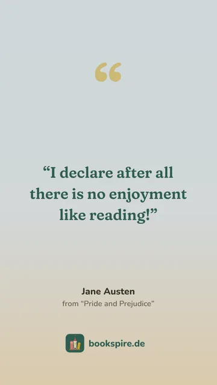

Scan the ISBN
Point the camera at the barcode, and the book is there. If a book has no barcode, take a photo of the ISBN and your phone reads it itself.
Features
The home page tells how your books become a tower. Here is everything else Bookspire holds, for everyone who wants to know exactly. Whatever needs the guild says so.
Point the camera at the barcode, and the book is there. If a book has no barcode, take a photo of the ISBN and your phone reads it itself.
It finds books despite small typos or with a volume number like “Harry Potter 3”. The first results appear while you type.
Scanned a box with several volumes? If you like, Bookspire adds each volume as a book of its own.
If the search can’t find a book, you add it yourself and, if you like, make it findable for everyone else.
Read, reading, want to read or abandoned. Rate in half stars, write notes and mark favourites.
While you read, Bookspire estimates from your pace so far when you will reach the last page.
E-books count in pages like printed books. Audiobooks you log in percent, and Bookspire turns them into pages of the print edition.
Up to three genres per book, your own tags like “comfort read” and series in the right order. Sort and filter your library by them.
Books you don’t own yet wait on a scroll beside the shelf. If you like, your friends can see it and find gift ideas there.
Was it gripping, cosy or dark? Once you finish, note how a book felt and how fast the story moved.
For many books, Bookspire knows the original title, the original language and who translated it.
Note who has your book right now. That always stays private, even from friends.
Keep what you never want to forget, with page and book. A photo of the page is enough: your phone reads the text itself, and you pick the sentence that matters.
Every quote can be shared as a picture. Mark favourite quotes with a heart, and with the guild they come back in your statistics and recaps.

Your books stand in the tower the way you like: by author, title, date read, genre or the colour of their spines.
Move, turn and colour what you have unlocked. Zoom in with two fingers to place even small things exactly.
The window follows the time of day, the season and the weather, from summer storms to snowfall. You can also pick a fixed weather.
Halloween, Easter and Midsummer bring stamp cards, Advent a calendar with 25 doors. Their pieces exist only in that year.
Choose skin tone, hairstyle, clothes and colours yourself, with a hijab or in a wheelchair if you like. Your pages bring new things.
On the ground floor lies an egg that grows warmer with every page you log. What it becomes, we won’t tell.
Look at your whole tower, with ivy, forest and sky. From the third floor up, a balcony can replace the window.
Share your reading room and your tower story-sized, with this year’s books and pages.
Set a goal for books, for pages or for both. Bookspire tells you whether you are on track.
Books, pages and ratings for every year or in total, books per month and an overview of your library.
Your reading year in cards to swipe through. Share them to your story or save them all to your photos at once.
For every 250 pages you log in a month, you earn a coin. With the guild you trade them for special pieces.
Your current book, your reading room or both together on your home screen, with “Enter page” and “Timer”.
On iPhone, your book sits on the lock screen too, and a running reading timer shows in the Dynamic Island.
Start timing from the book or the widget. When you stop, Bookspire asks for your page.
On the days and at the times you choose, Bookspire reminds you to read. If you like, also of new seasons and Advent doors.
Look around your friends’ reading rooms, open their shelves and see what they are reading.
Send a book with a note. One tap puts it on their wishlist.
For every friend, you see which books you have both read.
Who reads the most pages this month? A little nudge among friends – joining in is up to you.
A vault beneath the tower for every club, with votes, everyone’s progress in the current book and your next meeting. Joining is free, founding needs the guild.
If you like, you hear when someone sends you a friend request, recommends you a book or starts a vote in your club.
Whether friends see your library, notes, tower or wishlist, you set for each one separately.
If someone bothers you, block them. We look at every report ourselves.
Bookspire works without signing in. Then everything stays on your device.
You sign in with a code from an email, no password needed. Your library and tower are backed up and synced, with the guild on several devices at once.
Bring your books from Goodreads, BookBuddy or any CSV file, and take them with you again as a CSV file or a backup.
Delete your account right in the app, along with everything on the server and on your device.
Buttons and fields are labelled, and your reading room is described in words, with shelves, furniture and avatar.
With “Reduce motion” on, candles, weather and big animations stand still.
Bookspire speaks both languages, following your device or your own choice.
Every area explains itself through the “?” at the top, and Bookspire shows you new things once, briefly, when the time comes.
Every floor to furnish, the guild shop, a reading calendar full of covers, your own book clubs and a closer look at your reading.
More about the guild